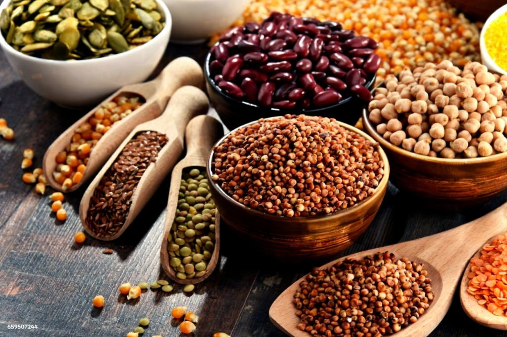

From the purity of the farm to the elegance of your table, Ayush Vedica presents a distinguished selection of spices, dals, besan, and poha — thoughtfully crafted to preserve their natural essence and superior nutritional value.
We believe true wellness begins with what we consume. A nourished body cultivates a balanced mind, and this harmony is best achieved through food that is both wholesome and authentic. Each Ayush Vedica product embodies this philosophy, offering an impeccable union of flavour, vitality, and convenience.
At Ayush Vedica, we uphold the principle that health and taste are inseparable. When nutrition is preserved in its purest form, flavour flourishes naturally. This is the experience our patrons cherish — and the reason they return to us, time and again.
From field to formulation, we pioneer next-generation nutrition solutions that blend science, quality, and sustainability to create products that truly nourish.
